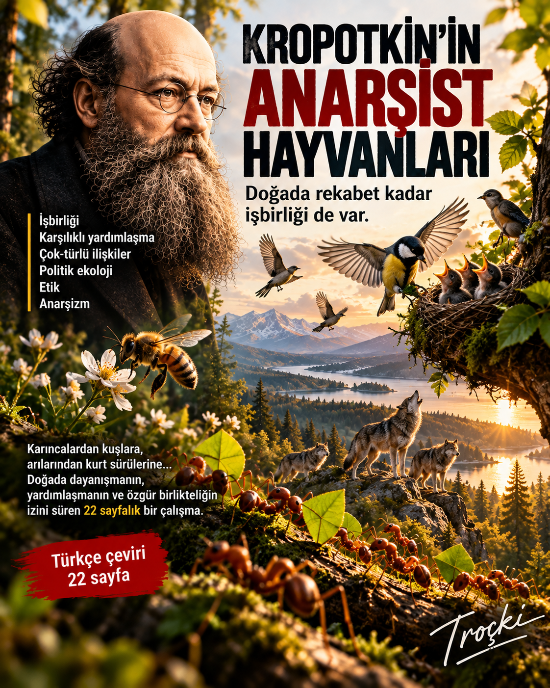
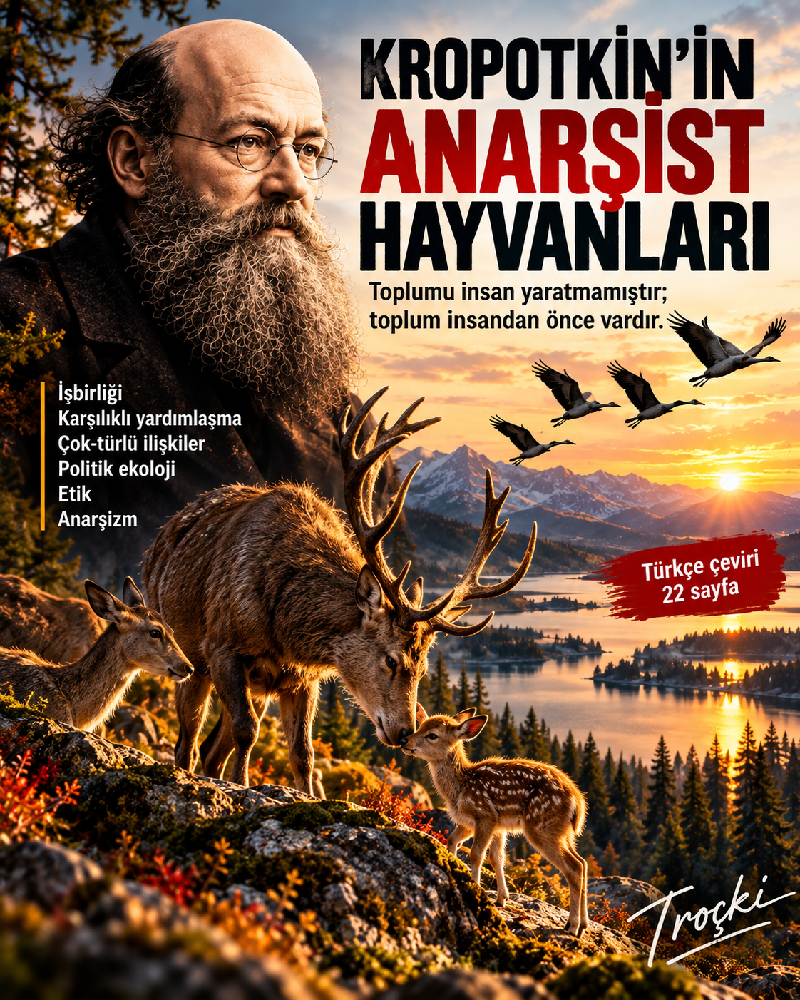
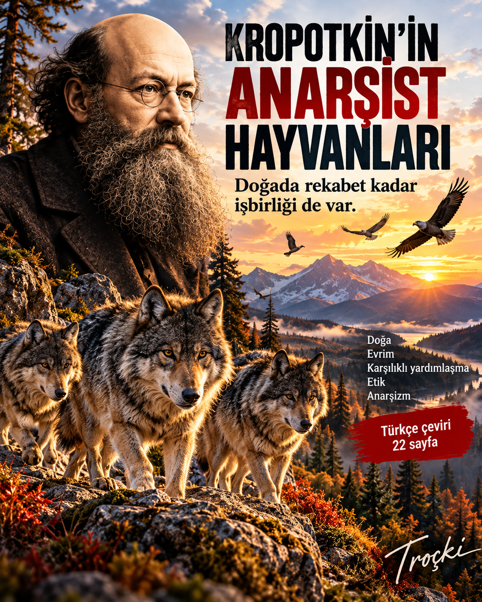

Doğa, evrim, karşılıklı yardımlaşma, çok-türlü ilişkiler, etik ve anarşizm arasında uzanan 22 sayfalık Türkçe çeviri.
3 Ekim 202622 sayfaTürkçe çeviri

Kropotkin’in doğa bilimleriyle siyasal düşüncesini birbirinden ayırmak mümkün mü? Bu çalışma, hayvan toplumları üzerine gözlemlerinin onun karşılıklı yardımlaşma, etik ve anarşizm anlayışının merkezinde bulunduğunu savunuyor.
Metin; Kropotkin’in Sibirya gözlemlerinden Mutual Aid’e, karıncalardan kuşlara ve kurt sürülerinden insan topluluklarına uzanıyor. Rekabeti inkâr etmeksizin, toplumsallığın ve karşılıklı desteğin de evrimin güçlü dinamikleri arasında bulunduğu fikrini inceliyor.
“Toplumu insan yaratmamıştır; toplum insandan önce vardır.”
Dosyanın izlekleri
Karşılıklı yardımlaşma · işbirliği · hayvan toplumsallığı · çok-türlü ilişkiler · politik ekoloji · etik · müşterekler · özgür birliktelik · anarşizm.
Türkçe çeviri — tam metin
Aşağıdaki çalışma PDF okuyucu kullanılmadan, doğrudan Patika Dergi sayfasında HTML metin olarak yayımlanmıştır. Akademik atıflar, özel adlar, dipnotlar ve kaynakça korunmuştur.
Özet
Peter Kropotkin hem doğa bilimlerinde hem de sosyal bilimlerde yaygın biçimde atıf yapılan bir düşünürdür. Biyolojide insan-dışı hayvanlar arasındaki karşılıklılık ve yardımlaşmaya ilişkin öncü çözümlemeleriyle; sosyal bilimlerde ise anarşizmi bir felsefe, ideal ve devrimci pratik olarak en sistemli biçimde savunan düşünürlerden biri olmasıyla tanınır. Bu makale, Kropotkin düşüncesinin bu iki boyutunun birbirinden ayrı olmadığını, tersine iç içe geçtiğini ileri sürmektedir. Hayvan toplumları üzerine yaptığı çalışmalar, onun siyasal bağlılıklarının biçimlenmesinde merkezi bir rol oynamıştır. Kropotkin insan-dışı canlılarda yalnızca güçlü bir işbirliği eğilimi değil, çoğunluğun iyiliği için davranabilme kapasitesi de dahil olmak üzere ahlakın “insan-ötesi” kökenlerine ilişkin kanıtlar görmüştür. İnsanlar ve insan-dışı canlılar yalnızca yan yana evrimleşmemiş; ortak ve iç içe geçmiş bir evrimsel tarih ile toplumsal olarak öğrenilmiş davranışları paylaşarak birlikte evrimleşmişlerdir. Kropotkin ayrıca birçok insan-dışı türün empati gösterdiğini, oyun oynadığını, sevgi bağları kurduğunu ve ortak amaçlar için işbirliği yaptığını; üstelik bunları zorlama, merkezi otorite ya da sözleşme olmaksızın gerçekleştirdiğini vurgulamıştır. Hayvanlar arasında gözlemlediği özgür birliktelik ve karşılıklı bağımlılık örüntülerinin insan toplumlarındaki müşterekleşme ve kardeşlik biçimlerinde de karşılıkları vardır. Türlerin birlikte evrimleştiği ve toplumsal-ekolojik yaşamın temelinde tahakkümden çok işbirliğinin bulunduğu yönündeki bu ikili kavrayış, Kropotkin’in anarşizm kuramının temelini oluşturmuştur. İnsanlarla insan-dışı canlıların ortak kökenini ve tüm canlı maddenin birliğini kabul eden Kropotkin, en temel siyasal sorulardan birini sorabilmiştir: Bir kimsenin başkaları üzerinde hükmetmeye ne hakkı vardır?
Anahtar sözcükler: anarşizm, hayvan coğrafyaları, karşılıklılık, politik ekoloji, çok-türlü ilişkiler
“Dünyamız, kimi zaman sevgiye dönüşecek kadar sıkı örülmüş bir karşılıklı bağımlılıklar ağıdır.” — Tim Flannery (2010), Here on Earth
“Yeryüzünden, biz kendimiz.” — Thomas Berry (2009), The Sacred Universe
“Sürünün gücü kurttur; kurdun gücü de sürü.” — Rudyard Kipling (1894), The Jungle Book
Giriş
Tarihçi Greg Afinogenov (2023), Kropotkin’in klasik eseri Mutual Aid’i yakın tarihli bir yeniden değerlendirmesinde, kitabın insan-dışı hayvanlar arasındaki işbirliğinin “yüzlerce canlı örneğini” sıralayarak başladığını, ancak bu örneklerin anlamdan fazla bir şey kaybetmeden birkaç sayfaya indirgenebileceği izleniminden kaçmanın zor olduğunu söyler. Afinogenov’a göre Kropotkin’in etolojisi gereğinden fazla ayrıntılıdır ve siyasal mücadelenin daha sistematik bir açıklamasını geliştirmekten uzaklaştırıcıdır. “Mutual Aid birçok çağdaş Marksist metnin karmaşıklığından yoksundur” der; bu değerlendirme, Kropotkin’in hayvan toplumsallığına ilişkin yoğun anlatısının devrimci siyasetin ciddi meselelerinden fazla uzak olduğu varsayımına dayanır.
Bu makale tam tersini savunmaktadır: Kropotkin’in hayvanlar hakkındaki düşünceleri onun devrimci siyasetinin köşe taşlarından biridir. Bunun birkaç nedeni vardır. Birincisi, Kropotkin tutkulu bir doğa araştırmacısıydı. Aristokrat konumunun kendisine yüklediği saray yaşamının sıkıcı kalıplarından kaçmanın yollarını aradığı gençlik yıllarında her fırsatta dışarı çıkar, Rusya’nın bitki örtüsünü, hayvanlarını ve fiziki coğrafyasını incelerdi. Bu erken dönem keşifleri düşüncelerinin gelişiminde belirleyici oldu. İkincisi, daha sonra etik anlayışını ve anarşizme siyasal bağlılığını besleyecek birçok özelliği ilk kez insan ilişkilerinde değil, doğal dünyada gözlemledi. Doğada işbirliği yapma, kaynakları yeniden dağıtma, ortak yaşama, oyun oynama ve sosyalleşme eğilimleri gördü; üstelik bunların tümü hukukun baskıcı gücü ya da yönetici bir otoritenin denetimi olmaksızın gelişiyordu (Dugatkin 2011, xii; Hale 2014). Doğada anarşi ve komünizmin izlerini bulmak, mülksüzleştirme sayesinde kurulmuş ve zor kullanılarak sürdürülen egemen toplumsal düzenin yapay bir dayatma olduğu, dolayısıyla sökülüp yerine herkesin özgürlüğünü güvence altına alan bir siyasetin kurulabileceği anlamına geliyordu.
Kropotkin’in yazılarında ayrıca “ilişkisel etik”in (Whatmore 1997; Buller 2016) ve çarpıcı biçimde insan-merkezci olmayan bir siyasetin gelişimini görürüz. “Çok-türlü kolektifler”den söz etmek moda olmadan onlarca yıl önce Kropotkin, zekâ, irade ve empatinin insan-dışı türlerde bolca bulunduğunu ve Yeryüzünün kendisinin karşılıklı bağımlı, yaşayan ve evrilen bir sistem olduğunu kabul etmişti. Ona göre herhangi bir taşın düşüşü, bir derenin akışı ya da tek bir ağacın veya hayvanın yaşamı, canlı ve cansız doğanın bütününün özelliklerinin zorunlu bir dışavurumuydu (Kropotkin 2019 [1921], 87). Bütünün esenliği, örgütlü maddenin en küçük parçacıklarının her birinin esenliğinin toplamına bağlıydı (1993 [1897], 102). Bu cümleler Kropotkin’in siyaseti tartışılırken nadiren anılsa da dünya görüşünü anlamak bakımından temeldir. Yaşamın birlikte evrimleşen bir bütün olduğunu ve her şeyin başka her şeyle bağlantılı bulunduğunu kabul etmek, Kropotkin’in şu soruyu sormasına imkân verir:
“Öyleyse herhangi biri bu muazzam bütünün en küçük parçasını hangi hakla sahiplenip ‘Bu benim, senin değil’ diyebilir?” (2015 [1892], 14).
Dolayısıyla doğa tarihi, Kropotkin’in siyasal düşüncesinde merkezi bir yere sahiptir. Bu makalenin geri kalanı, onun yazılarında evrimsel olan ile devrimci olanın ne ölçüde iç içe geçtiğini göstermeye çalışacaktır (Ferretti 2017; Hale 2014; Purchase 1996). Kropotkin’in kendi odağını izleyerek özellikle insan-dışı hayvanlar üzerine yazılarına yoğunlaşacağız; fakat bunların onun gezegensel yaşama ilişkin daha geniş düşüncesini de açığa çıkardığını akılda tutacağız.
Tundra ve Bozkırın Dersleri — Doğayı yalnızca rekabet üzerinden okumak yerine, Kropotkin’in karşılıklı yardımlaşma fikrinin doğduğu saha gözlemleri.
Tundra ve Bozkırın Dersleri
1842’de Moskova’da doğan Pyotr Alekseyeviç Kropotkin (1842-1921), St. Petersburg’daki İmparatorluk sarayıyla güçlü bağları bulunan varlıklı ve aristokrat bir ailede yetişti. Küçük yaşta evde eğitim gördü. “Yüksek ücretli Fransız öğretmen M. Poulain” ile “çok düşük ücretli Rus öğrenci N. P. Smirnoff”un dersleri, genç Kropotkin üzerinde tarih derslerine sızan cumhuriyetçi değerler ve okumaya teşvik edildiği sansürlü metinler kadar etkili olmamış görünür (Kropotkin 1899a, 18; Dugatkin 2011, 4; Woodcock ve Avakumovic 1990, 24-25). Asıl canlı eğitim ise dışarıdaki gezilerdeydi. Kaluga çevresindeki tenha ormanlarda dev kızılçamları, karanlık ve gizemli çalılıkları, hızla koşuşturan hayvanları, Afrika manzaralarını çağrıştıran kumları ve ormanın neredeyse uhrevi sessizliğini hayranlıkla izledi. Daha sonra, “Doğaya duyduğum ilk sevgi ve onun durmaksızın süren yaşamına ilişkin ilk belirsiz sezgim o ormanda doğdu” diye yazacaktı (1899a, 50).
Edebiyat da benzer bir coşku yarattı. Goethe’nin “ölümsüz dramı”, özellikle yine bir ormanda geçen Faust monoloğu onu büyüledi. Kayınbiraderinin evinde Stoacılar, Marcus Aurelius, Voltaire ve Fransız ansiklopedistleri gibi yasaklı yazarları keşfetti; bu metinler onda “evrenin sonsuz enginliği, doğanın büyüklüğü, şiiri ve durmaksızın atan yaşamı” duygusunu uyandırdı (1899a, 113). Soyluları askerî hizmete hazırlayan seçkin Page Corps’a girdikten sonra fizik, matematik ve astronomi bilgisini geliştirdi; tarih, hukuk, karşılaştırmalı istatistik ve siyasal iktisat okudu; haritacılık ve arazi ölçümü konusunda doğrudan deneyim kazandı. Bu alanlar giderek bütünleştirici bir yaşam görüşünde birleşti. Kropotkin’in sözleriyle, evrenin kesintisiz yaşamı ve evrimi onun için tükenmez bir şiirsel düşünce kaynağı olmuş; insanın canlı ve cansız doğayla birliği, “Doğanın şiiri”, yaşam felsefesine dönüşmüştü (1899a, 136).
Kropotkin’in yetişmesi aynı zamanda siyasal bir eğitimdi. Kaba babasının hizmetkârlara davranışından nefret ediyor, uzak köylerde köylülerle yemek yiyip konuşması onu serfliğin kaldırılması kampanyasının ateşli bir destekçisi yapıyordu (Cahm 2009, 20). Babasının istediği İmparatorluk Muhafızlığı kariyerinden kaçmak için Amur’un atlı Kazak alayına başvurdu. Transbaykal’daki bu mütevazı görev onu aristokrat ayrıcalıkların “geçit törenleri ve saray baloları” dünyasından uzaklaştırırken Sibirya’nın coğrafyasını ve ekolojisini araştırma fırsatı verecekti. Kardeşi ve akıl hocası Alexander’ın etkisi de büyüktü. Alexander, Karl Roullier’nin hayvanların sürekli değişen ve evrilen varlıklar olduğunu savunan “transformizm” derslerini dinlemişti; Darwin’in The Origin of Species’inin (1859) yayımlanması iki kardeş arasında yoğun bir mektuplaşma başlattı. Kropotkin ayrıca Humboldt’un Sibirya seyahatlerini, Carl Ritter’in Transbaykal anlatısını ve Richard Otto Maack’ın Ussuri ile Amur nehirleri araştırmalarını okudu. Özellikle hayran olduğu Humboldt, genç saha bilimcisinin hayal gücünü ateşledi.
Beş yıl boyunca Kropotkin askerî ve bilimsel seferlere katıldı; araba, buharlı gemi, at ve kızakla 50.000 milden fazla yol alarak Baykal Gölü’nü, Sayan Dağlarını, Patom Yaylalarını, Amur Nehri’ni ve Mançurya’yı araştırdı. Bu çalışmalar ona Rus Coğrafya Derneği’nin altın madalyasını kazandırdı; Orta Sibirya’nın kuraklaşması ve orografisi ile Finlandiya buzullaşması üzerine araştırmaları hâlâ özgün kabul edilir. Kropotkin, “kitaplardan öğrenilemeyecek” şeyler öğrendiğini düşünüyordu. Olekmin-Vitim seferinde genç zoolog Ivan Poliakov ile birlikte, Darwin’in Türlerin Kökeni’nin taze etkisi altında, türler arasındaki rekabetin kanıtlarını özellikle aradılar. Fakat Kropotkin daha sonra, iklimin olumsuz koşullarına ve düşmanlara karşı çoğu kez ortaklaşa verilen mücadeleye çok sayıda örnek gördüklerini; buna karşılık aynı türden yüksek hayvanlar arasında gerçek rekabet ve çatışma örneklerine, bütün dikkatlerine rağmen, çok seyrek rastladıklarını yazdı (2022 [1902], 19-20).
Bu deneyim Kropotkin’i yerleşik doğruları sorgulamaya ve bilimsel kabulleri sahadaki yaşamla sınamaya yöneltti. Hayvanları doğal ortamlarında pek tanımayan “masa başı doğa bilimcilerini” sert biçimde eleştiriyordu. Sibirya ona yalnızca zoolojik yaşamı kitabi olmayan bir gözle görmeyi öğretmedi; radikal siyasete bağlılığını da pekiştirdi. Serf sahibi bir ailede büyümüş biri olarak başlangıçta emretmenin, buyurmanın ve cezalandırmanın gerekliliğine inandığını; fakat devletin çok zayıf olduğu sınır bölgelerinde sıradan insanların olağanüstü işler başardığını gördüğünü anlatır. Zorlama ve hiyerarşik düzen
bastırmada işe yarasa da toplumsal yaşamı kuran “yapıcı çalışma” için pek işe yaramıyordu. Bir toplum kurmak “ortak anlayış” ve “birçok iradenin aynı yönde birleşen çabaları”nı gerektiriyordu. Kropotkin’in ünlü ifadesiyle: “Sibirya’da, Devlet disiplinine duyduğum inancın ne kadarı kaldıysa onu da kaybettim. Anarşist olmaya hazırdım” (1899a, 251).
Bu düşüncelerin birleşmesi zaman aldı. Fakat Kropotkin’in insan-dışı yaşam ile insan toplumsallığını karşılaştırmalı biçimde incelediği şimdiden görülebilir. Köylüler özerk yargılarını kullanabildiklerinde ortaya çıkan aşağıdan yukarıya işbirliği, tepeden denetimin geleneksel gerekçeleriyle uyuşmuyordu. Benzer biçimde hayvanlardaki çok sayıdaki işbirliği örneği, beslenme ve üreme dürtülerinin organizmaları bireyci mücadeleden çok karşılıklı desteğe yönelttiğini düşündürüyordu. Bu iki hat, Kropotkin’in 1880’lerin başında Clairvaux hapishanesinde, Rus zoolog ve coğrafyacı Karl Kessler’in “Karşılıklı Yardımlaşma Yasası Üzerine” başlıklı konferans metnini okumasıyla belirginleşti. Kessler Darwinci evrimi kabul ediyor, fakat doğadaki rekabet ve “mücadele” vurgusunun Malthusçu fikirlerin etkisiyle abartıldığını düşünüyordu.
Kessler varoluş mücadelesini inkâr etmiyor; hayvanlar âleminin ve özellikle insanlığın ilerici gelişiminin karşılıklı mücadeleden çok karşılıklı destek tarafından güçlendirildiğini savunuyordu. Organik varlıkların beslenme ve türü sürdürme gibi iki temel ihtiyacı olduğunu; ilkinin çatışmaya, ikincisinin ise yaklaşmaya ve birbirini desteklemeye yol açtığını, organik dünyanın evriminde karşılıklı desteğin daha önemli bir rol oynadığını ileri sürüyordu. Bu görüş Kropotkin’in Sibirya gözlemleriyle örtüşüyordu. Kuzeyin seyrek yaşamı ve sert ikliminde canlılar çoğu zaman birbirleriyle değil çevreyle mücadele etmek zorundaydı; tipi ve dondurucu soğuk karşısında işbirliği, sınırsız rekabetten daha büyük uyumsal avantaj sağlıyordu.
Thomas Huxley’nin “The Struggle for Existence” makalesi Kropotkin’i görüşlerini sistemleştirmeye itti. Huxley hayvan dünyasını, en güçlü, en hızlı ve en kurnazın ayakta kaldığı bir “gladyatör gösterisi”ne benzetiyor; toplumu da Hobbesçu bir “herkesin herkese karşı savaşı” olarak betimliyordu. İnsanlığın doğa yasalarına mutlak bağımlılığını savunuyor ve rekabet savaşını azaltma girişimlerini akıldışı buluyordu. Kropotkin’e göreyse Huxley, egemen sınıfların ideolojisini evrimin içine yerleştiriyor ve rekabeti “bilimin açıkladığı bir doğa buyruğu”na dönüştürüyordu. Kropotkin bu görüşleri korkunç buldu ve yanıt vermeye karar verdi.
İnsan-Dışı Kolektifler — Arılar, kuşlar, karıncalar ve kurt sürüleri: toplumsallığın insanla başlamadığını gösteren çok-türlü yaşam örüntüleri.
İnsan-Dışı Kolektifler
Kropotkin’in Mutual Aid: A Factor of Evolution (1902) adlı kitabı önce 1890-1896 arasında Nineteenth Century dergisinde yayımlanan bir dizi makale olarak ortaya çıktı. İlk iki makale “Hayvanlar Arasında Karşılıklı Yardımlaşma” üzerindeydi. Kitap biçiminde yeniden yayımlanırken hayvan toplumsallığına ilişkin altı ek bölüm daha eklendi. Sözcük sayısıyla bakıldığında hayvan yaşamı üzerine tartışma bütün savın yaklaşık dörtte birini oluşturur; insan toplumlarındaki karşılıklılık üzerine daha sonra yazdıklarının önemli bölümü, insan-dışı kolektiflerde gözlemlediklerine dayanır.
Kropotkin işe, doğanın “yalnızca bir kıyım alanı” olduğu düşüncesini reddederek başlar. Hayvanları yalnızca laboratuvarlarda ve müzelerde değil ormanda, çayırda, bozkırda ve dağlarda incelediğimizde, türler arasında savaş ve yok etmenin yanında aynı türe ya da aynı topluluğa ait hayvanlar arasında en az bunun kadar, hatta daha fazla karşılıklı destek, yardımlaşma ve savunma gördüğümüzü söyler. “Toplumsallık, karşılıklı mücadele kadar bir doğa yasasıdır” (Kropotkin 2022 [1902], 16-17). Bunun romantik bir doğa resmi olmadığını özellikle belirtir: Doğayı “yalnızca uyum ve barış” olarak görmek de yanlıştır. Gaga ve pençe mücadelesi gerçektir ve evrimde rol oynar; ancak Kropotkin’e göre karşılıklılık daha kalıcı ve güçlü bir evrimsel kuvvettir.
Kanıt olarak kendi gözlemlerinin yanı sıra başka doğa araştırmacılarından da yararlanır. Örneğin leş böceklerinin (Nicrophorus), bir fare, kemirgen ya da kuş leşi bulduklarında birlikte çalışarak onu uygun bir yere taşıdığını ve dişinin yumurtlayabilmesi için toprağa gömdüğünü anlatır. Johann Gleditsch’in bir ölüyü iki çubuktan yapılmış haça asarak böcekleri sınadığı deneylerde, böceklerin “insanın hilesini yenmek için zekâlarını birleştirmeleri” Kropotkin’i etkilemiştir. Gübre böceklerinde de, kendi ağırlıklarının kat kat üzerindeki gübre toplarını uzun mesafelere taşırken benzer bir “çabaların birleşmesi” görür.
Karıncalar, termitler ve arılar Kropotkin’in anlatısında özel yer tutar. Okuru bir karınca yuvasına bakmaya ve işbirliğinin çok sayıdaki örneğini görmeye çağırır: inşa, beslenme, yiyecek arama, yavru yetiştirme ve “tarım” kolektif olarak yürütülür; zekâ bile “özünde toplumsal bir yeti”dir. Linnaeus’nun yaprak bitlerini “karıncaların inekleri” diye nitelemesini aktarır; Jean-Henri Fabre, Auguste-Henri Forel, Pierre Huber, John Lubbock, John Traherne Moggridge ve Georges Romanes gibi entomologların çalışmalarına dayanarak karıncaların çocuk odalarına, yollarına, tonozlu galerilerine ve ambarlarına
hayranlık duyar. Bunlarda yalnızca cesaret ve üstün zekâ değil, yoğun ve çalışkan yaşamlarını tanımlayan bilinçli bir toplumsallık ifadesi görür.
Kuşların “tüylü dünyası” da geniş yer kaplar. Şahinler, kerkenezler ve kumkuşları birlikte uçar ve oynar; kızkuşları ile kuyruksallayanlar daha büyük yırtıcılara topluca saldırır; pelikanlar “balıkçılık birlikleri” kurar ve bazıları dinlenirken diğerleri nöbet tutar. Papağanların avcıları caydırmak için kümelendiğini ve bir eşleri öldürüldüğünde yas tuttuklarını, turnaların nöbetçiler diktiğini ve topluluğun güvenliği için keşif kolları gönderdiğini aktarır. Akbabaların başka türlerle birlikte beslendiği ve ortak tünek kullandığı örnekleri de verir. Kropotkin’e göre kuş toplumlarında yaşam yuvalama dönemi bitince sona ermez; gençler, çoğu zaman birden fazla türü içeren topluluklar oluşturur ve bu toplumsal yaşam güvenlik kadar birlikte olmanın hazzı için de sürdürülür.
Hayvan yaşamının bir başka özelliği karmaşık örgütlenmedir. Domuzlar, yaban domuzları ve gevişgetiren sürüler yırtıcılara karşı savunma düzenleri kurar. Koyotlar, Afrika yaban köpekleri, dhole’lar ve Sri Lanka çakalları ortak avlanır. Bazı birliktelikler belirli bir amaç için geçicidir: Karayipler ve Kuzey Amerika’daki kara yengeçleri üremek için denize göç etmeden önce sürüler hâlinde toplanır; Kropotkin’e göre her böyle göç “uyum, işbirliği ve karşılıklı destek” içerir.
Memelilerde de en küçükten en büyüğe ortak amaç ve zekice eylem örnekleri görür. Fillerin “bileşik aileler” hâlinde yaşadığını ve güçlü bağlılık bağları kurduğunu; maymunların toplumsal gruplar oluşturduğunu, yalnız kaldıklarında mutsuzlaştığını, oyun oynadığını ve yaralılarına büyük özen gösterdiğini vurgular. Tavşanların büyük kolonilerde yaşadığını; son derece bireyci sayılan yaban tavşanlarının bile ilkbaharda kur davranışları sırasında bir araya geldiğini belirtir. Morslar ve foklar büyük sürüler oluşturur; balinalar ve yunuslar gibi deniz memelileri toplumsal gruplar içinde zengin duygu repertuarı sergiler. Misk sıçanlarının bölmeli kubbe biçimli yuvaları ve kunduzların koloniyi barındırıp yırtıcılardan koruyan barajları, karmaşık iletişim ve planlamanın örnekleridir.
Kropotkin’in temel noktası, “toplumsallık”ın hayvanlar âleminde yaygın olduğudur. Yüz binlerce bireyden oluşan memeli toplulukları karşısında etçillerin sayısının küçüklüğünü hatırlatır ve hayvan dünyasını yalnızca aslanların ve sırtlanların kanlı dişlerinden ibaret görmekle insan yaşamını yalnızca savaş katliamlarından ibaret görmek arasında fark olmadığını söyler: “Memelilerde birliktelik ve karşılıklı yardımlaşma kuraldır” (2022 [1902], 43). Grup göçü, ortak savunma, kolektif beslenme ve bakımın yanında Kropotkin oyun davranışlarına da özel önem verir: taş fırlatma ve başka nesne oyunları, sahte boğuşmalar, kovalamacalar, dans benzeri hareketler, saklambaç, ses çıkarma ve şarkı söyleme. Bunların evrimsel işlevini kabul etmekle birlikte oyunu hayvanlardaki “yaşamsal güç” ya da “güç fazlası”nın ifadesi olarak görür. Oyun, grup bağlarını güçlendirmenin ötesinde “sevinç nöbeti” ve “yaşam sevinci” gibi olumlu duygulanımların, sırf haz için yapılan etkinliklerin göstergesidir. Kropotkin’in hayvan yazılarında keder, umutsuzluk, sempati, merhamet ve neşe gibi sözcüklerin sık geçmesi antropomorfizm eleştirilerine yol açmıştır; ancak çağdaş evrimsel biyoloji ve bilişsel etoloji insan-dışı hayvanların geniş bir duygu yelpazesi yaşadığına dair güçlü kanıtlar sunmaktadır.
Bağ kurma, oyun, olumlu duygular, karşılıklı destek ve grup savunmasının insan-dışı canlılarda bulunduğunu gösterdikten sonra Kropotkin, Huxley ve diğer sosyal Darwinistlerin iddialarını önemli ölçüde zayıflattığını düşünür. Hayvan yaşamı, Huxley’nin “gladyatör gösterisi”ndeki vahşi rekabet ve sürekli kıyıma indirgenemeyecek kadar geniş ve farklılaşmıştır. Kropotkin’in çarpıcı ifadesiyle, “Karıncalar ve termitler ‘Hobbesçu savaş’tan vazgeçmiştir ve bundan kazançlı çıkmışlardır.” Daha da radikal olarak, hayvanların zengin ve çeşitli bireysel yaşamları olduğunu savunur. Zekâ, cömertlik, sevinç, acı, ortak oyun, karmaşık iletişim, akraba olmayan bireylere bakım ve başkalarını gözeten davranışlar, onu şu sonuca götürür: Hayvanlar kendi ilişkisel ve algısal dünyalarını kurarlar; gerçek toplumsallık yalnızca insana özgü değildir. “Toplumu insan yaratmamıştır; toplum insandan önce vardır” (2022 [1902], 54, dipnot).

Çok-Türlü Siyaset — İnsan ile diğer canlıların karşılıklı bağımlılığı, politik ekoloji ve özgür birliktelik düşüncesinin ortak zemini.
Çok-Türlü Siyaset
Kropotkin başlangıçta organizmaların birbirleriyle ve çevreleriyle ilişkilerini betimlerken, hayvanların “toplumlar” oluşturmasını düşünmeye başladığında ekolojiden politik ekolojiye, Gerard Kuperus’un deyişiyle “ekopolitika”ya yönelir. Ekopolitika, diğer insanları, insan-dışı varlıkları ve yaşam alanlarını içeren ilişkiler ağları içinde var olduğumuzu kabul etmekten doğar; dolayısıyla yeryüzündeki yaşamın tam bir açıklaması birlikte yaşamanın siyasal sonuçlarını da hesaba katmalıdır. Kuperus’un “Yaşamak işbirliği yapmaktır” sözü, Kropotkin’in düşüncesini iyi özetler.
Kropotkin bu hattı en az üç yönde geliştirir. Birincisi, ahlaki içgüdülerin insan öncesi kökenini savunur. Ahlak ne ilahi buyruğun aşkın alanından ne de suç ve cezanın dünyevi düzeninden doğmuştur. Ne Tanrı ne de Leviathan bize ahlak vermiştir. Ahlak, bireyin çıkarı yerine grubun esenliğini öne çıkaran işbirliği eğilimleri başta olmak üzere insan-dışı toplumsallıktan doğmuş, daha sonra adalet, iyilikseverlik ve eşitlik gibi daha incelmiş kavramlara evrilmiştir. Bu, Jean-Marie Guyau’nun felsefesinden beslenen, Kant’ın metafiziğine, Locke ve Hobbes’un bireyciliğine ve din adamlarının doğaüstü dogmalarına karşı duran materyalist bir etik yorumudur.
İkincisi, kovanlar, tünekler ve koloniler işbirliğinin mantığını açığa çıkarıyorsa, ortaçağ kentleri, loncalar, klan sistemleri ve tarımsal müştereklerin de derin bir kolektif dürtünün maddileşmesi olarak görülmesi gerektiğini savunur. Kropotkin neredeyse her yerde merkezsiz toplumsallık ve müşterekleşme örnekleri bulur. Barınma, beslenme ve üretim gibi gündelik eylemler bile özel ve bireysel deneyimler olarak açıklanamaz. İnsan ve insan-dışı failler, verme ve alma döngüleri içinde hem kendilerini hem çevrelerini değiştirerek dünyalar kurarlar.
Üçüncü sonuç şudur: bütün tarih doğa tarihidir. İnsanlar doğanın “dışında” ya da “üstünde” değil onun tam içindeyse ve evrim esas olarak en güçlünün hayatta kalmasına dayalı rekabetten çok karşılıklı yardımlaşmayla işliyorsa, hiyerarşi ve sömürüye dayanan siyasal sistemler ne doğal ne de kaçınılmaz sayılabilir. Malthusçu ve Hobbesçu önyargılarından arındırılmış evrim düşüncesi, rekabet yerine işbirliğine, çıkarma yerine paylaşmaya, hiyerarşi yerine heterarşiye, özçıkar yerine dayanışmaya dayalı devrimci bir siyasetin kapısını açar.
Kropotkin ahlakın insan toplumsallığından önce geldiği ve insan-dışı işbirliği biçimlerinden türediği savını en kapsamlı biçimde ölümünden sonra yayımlanan, tamamlanmamış Ethics: Origin and Development (1921) çalışmasında geliştirir. Ahlakın “sürüsel/toplulukçu içgüdüler”den, yani insanlarla insan-dışı canlıların ortaklaşa yaşama ve eyleme eğiliminden doğduğunu ileri sürer. Bu kolektif yaşam biçimleri cömertlik, özveri ve empati gibi başkasını gözeten alışkanlıklar üretmiş, bunlar zamanla “ahlaki duygu”ya dönüşmüştür. Kropotkin zaman zaman bunun evrimsel ya da fizyolojik uyarlanmalarla geliştiğini ima etse de daha sık olarak atalarımızın, yakın ilişki içinde yaşadıkları hayvanları gözlemleyerek davranış öğrendiklerini savunur.
“İlkel atalarımız hayvanlarla, onların ortasında yaşadı. Doğaya ilişkin gözlemlerini düzene koyup sonraki kuşaklara aktarmaya başladıklarında, hayvanlar ve onların yaşamı hem yazısız bilgi ansiklopedilerinin hem de atasözleri ve deyişlerle ifade ettikleri bilgeliğin başlıca malzemesini sağladı. İnsanın incelediği ilk psikoloji hayvan psikolojisiydi” (Kropotkin 2019 [1921], 50).
Örneğin primatları gözlemleyen insan toplulukları onların grup için nöbetçi diktiğini, birbirlerinin tüylerindeki dikenleri ayıkladığını ve soğukta birbirlerine sokulduğunu görmüş olabilir. Karıncaların ve kemirgenlerin tahıl depolaması planlama ve öngörü konusunda pratik dersler sunarken; yiyecek paylaşma, tımarlama ve yavruları koruma gibi davranışlar ortak bakımın, hayvanların duyguları ise daha karmaşık “ahlaki duygular”ın kaynaklarını göstermiş olabilir. Kropotkin ayrıca dünyanın dört bir yanındaki insan topluluklarının sanatlarında, destanlarında, danslarında ve kozmogonilerinde hayvanların cesaretini, bağlılığını, çalışkanlığını ve yaratıcılığını kutladığını belirtir. Bu bakımdan hayvan toplumları insan toplumlarının yalnızca çevresi değil, kurucu unsurlarıdır.
Kropotkin’in hayvanlarda ahlaki faillik düşüncesi çağdaş araştırmalarda yankı bulur. Frans de Waal primatlar, deniz memelileri, kemirgenler ve tek toynaklılarda empatiyi araştırmış; Marc Bekoff “hayvansı ahlak” ve “vahşi adalet”in insan-dışı canlılarda yaygın olduğunu savunmuştur. Cheney ve Seyfarth, bilişin toplumsal bir dünyada yaşam tarafından biçimlendiğini ileri sürer. Thomas Berry’nin ekolojik etiği ve Nancie Erhard’ın “ahlaki habitatlar” yaklaşımı da Kropotkin’in “insanın ilk ahlak öğretmeni Doğadır” önermesiyle akrabadır. Fakat Kropotkin bu düşüncenin siyasal sonuçlarını özellikle öne çıkarır: Ahlak toplumsallıktan doğuyor ve doğaya yayılmış bulunuyorsa, kilise ile devletin otoriter yapılarına ya da eşitlikçi ilkelerin dışarıdan dayatılmasına gerek yoktur. “Toplumsal yaşam - yani ben değil biz - yaşamın normal biçimidir. Yaşamın kendisidir” (2019 [1921], 60).
Kropotkin’in müşterekleşmeye ilgisi de buradan gelir. Kovan, koloni ve tünek gibi insan-dışı işbirliği yapılarının ardından Mutual Aid’in son bölümlerinde insan müştereklerine yönelir. Burjuva ailesinden çok önce atalarımız gruplar, kabileler ve klanlar hâlinde yaşıyor; avcılığı ve yiyecek toplamayı toplumsal gruplar içinde öğreniyordu. Klan örgütlenmesinin sürekliliği, ilkel insanlığı yalnızca bireysel tutkularının peşinden giden düzensiz bireyler yığını olarak görmenin yanlışlığını gösterir. Dizginsiz bireycilik modern bir gelişmedir; insanlığın ilk hâlinin özelliği değildir. Etnografik araştırmalarda çocukların ortaklaşa yetiştirilmesi, av ve savunmada karşılıklı hizmetler, ganimetin paylaşılması ve evin sürdürülmesindeki ortak emek örneklerini bulur. Birçok yerli kolektifin açgözlülüğü sınırlayan yöntemler geliştirerek eşitsizliğin kalıcı kurumlara dönüşmesini engellediğini de belirtir. Kropotkin, Huxley’nin “hayvansı ilkellik” anlatısını düzeltirken Rousseau’nun basit “soylu vahşi” imgesine düşmemeye çalışır. “Dostluk kodu”nun yanında her zaman bir “düşmanlık kodu” da vardır. Eşitlikçi sonuçları üreten şey insanların doğuştan erdemi değil, kabile ve klan gibi toplumsal biçimlerdir. Klanın çıkarı için özsınırlama ve özveri gündelik olaylardır. Bu birliktelik eğilimi karmaşık devletlerden çok daha eskiye, insan tarihöncesine uzanır ve Kropotkin’e göre hayvan yaşamının gözlemlenmesiyle de ilişkilidir: maymun kabilesi, dolaşan kurt sürüsü, konuşkan kuş topluluğu, durmadan çalışan karınca topluluğu... İnsanların doğaya ilişkin ilk belirsiz genellemesi, canlı varlık ile onun klanı ya da kabilesinin birbirinden ayrılamayacağı olmuş olmalıdır.
Ortak tarım da aynı nedenle Kropotkin’i büyüler. Açık tarlalarda insanlar gübre toplar, eker, biçer, hayvanlara bakar, yapıları onarır ve alet yaparken birlikte yaşar ve çalışırlar. İyi, orta ve kötü toprağın görece dengeli paylaşılmasını sağlayan şey köylülerin özel erdeminden çok, çitlerin ve mülkiyetçi bireyciliğin başka sınırlarının bulunmadığı açık tarla yapısıdır. Kentte ise balıkçılar, tüccarlar, duvarcılar, taşçılar ve marangozların öz-yönetim ile karşılıklı yardımın “çifte ilkesi”ni uyguladığı loncaları inceler. Ortaçağ kenti yalnızca belirli siyasal özgürlükleri koruyan bir örgüt değil; tüketim, üretim, karşılıklı destek ve toplumsal yaşam için köy topluluğundan çok daha büyük ölçekte yakın bir birlik kurma girişimidir.
Modern kentte bile müşterekçiliğin izleri sürer. Evler, hastaneler, okullar, kütüphaneler ve belediye binaları geçmiş kuşakların birikmiş emeğini ve sayısız yaşayan işçinin süren çabasını taşır. “Ulusların zenginliği” dediğimiz şeyi oluşturan her atom değerini büyük bütünün parçası olmasından alır. “Benim ve senin” üzerine kurulu sınıfsal karşıtlık sistemi, dünya kurmanın her zaman kolektif bir girişim olduğu gerçeğini görmezden gelir.
Kropotkin’in tarihe ekolojik bakışı, Dünya’nın ontolojik birliğini de kapsar. Darwin’in doğal köken düşüncesi burada bir tarih kuramına dönüşür; fakat Kropotkin fizik ve biyolojideki gelişmelerin mekanik evren açıklamalarını da sarstığını vurgular. Evrenin merkezsizliği ve insan bedeninin, özerk işlevleri bulunan ama organizmanın yaşamı için birlikte çalışan hücrelerden oluşan bir “kozmos” olması onu etkiler. Modern bilim insana değerli bir alçakgönüllülük dersi vermiş; onu evrenin merkezinde ve Yaradan’ın özel ilgisinin nesnesi olduğu kibrinden çıkarmıştır. Brian Morris’in “evrimsel bütüncülük” dediği bu görüşte Kartezyen ikilik, Newtoncu mekanizm ve sosyal Darwinizm yerine olumsallık, faillik, karmaşıklık ve karşılıklı bağlantı öne çıkar. Hayvanlar bilinçli failler, toplumsal davranışlar gösteren ve anlam yüklü dünyalar kuran varlıklar olarak görünür. Daha da önemlisi Kropotkin ahlakın kökenini bu “insan-ötesi” dünyada bulur.
Kropotkin’e göre doğa bize ahlak-dışılık dersi vermez. İyi ve kötü fikirleri ile “en yüksek iyi”ye ilişkin soyutlamalar, insanın hayvan yaşamında ve kendi toplumsal yaşamında gördüklerinin zihinsel yansımalarıdır; bu izlenimler zamanla doğru ve yanlış hakkındaki genel kavramlara dönüşmüştür (1993 [1897], 16-17). Bu nedenle anarşizm, insan-dışı dünyada gözlemlediği “toplumsal ahlak” ve dayanışmanın siyasal ifadesidir: “İçimizde konuşan, hayvanlar âleminin bütün evrimidir.”

Vahşi Özgürlükler — Merkezi bir otorite olmadan birlikte yaşama: dayanışma, hareket özgürlüğü ve müşterek yaşam üzerine bir kapanış.
Vahşi Özgürlükler
Kropotkin “bütün serpilmenin karşılıklı” olduğunu kabul eder ve bunu bakım ile empatik birlikte yaşama pratiklerinin başlangıç noktası sayar. Aynı zamanda devlet aygıtının, “vahşi teokrasi” ve emperyal yağmayla birleşerek toplulukların ortaklaşa ürettiği zenginliğe el koyduğunu ve bu mülksüzleştirmeyi “doğal düzen” diye meşrulaştırdığını savunur. The Conquest of Bread’de “zenginin zenginliği yoksulun yoksulluğundan doğar” der ve köylüleri “tarlanın köleleri”, işçileri “makinenin köleleri” yapan uzun yağma tarihini anlatır. Buna karşılık anarşizm kadınların, kölelerin ve proleterlerin tam kurtuluşunu, insanlığın çağlar boyunca izlediği iki idealin - ekonomik ve siyasal özgürlüğün - senteziyle vaat eder.
Kropotkin çevrenin yok edilmesinden açıkça söz etmemiş ve doğa korumayı özel bir program hâline getirmemiştir. Bununla birlikte “biyolojinin işlevlerin bütünleşmesi dediği şeye, doğanın izlediği yola dönüş”ten söz eder; bu, Humboldtçu kozmos görüşündeki karmaşık ve dinamik etkileşim ağını hatırlatır. İnsan geçimi üzerine yazılarında sanayi tekniklerini ve yoğun üretimi desteklese de toprağın sağlığını korumanın ve üreticilerin pratik, kitabi olmayan bilgisinden yararlanmanın önemini kabul eder. Fields, Factories and Workshops’ta Guernsey ve Jersey’deki küçük üreticilerin verimsiz granit topraklarını ortak kullanım haklarıyla elde ettikleri deniz yosunu sayesinde verimli tarlalara dönüştürmesini över.
Kropotkin’i rejeneratif tarımın öncüsü saymak fazla ileri gitmek olur; ancak bitkileri “kimyasal ilaçların konduğu cam kaplar” gibi gören kaba sanayiciliği eleştirir ve bugün gıda egemenliği denebilecek düşünceleri tutarlı biçimde savunur. Bu yaklaşım, tarımı doğanın tahakküm altına alınması değil, insanlar
ile toprak arasında karşılıklılığa, yerel bilgiye ve ortak yaşam koşullarının sürdürülmesine dayanan ekolojik bir sözleşme olarak gördüğünü düşündürür.
Murray Bookchin, Graham Purchase ve Brian Morris Kropotkin’in anarşizminin derinden “ekolojik” olduğunu vurgular. Fakat bu ekolojik görüşün hayvan çalışmalarında köklendiğini unutmamak gerekir. Kropotkin’in anarşizmin merkezine yerleştirdiği dayanışma, karşılıklı saygı, kardeşlik ve sevgi, kendi sözleriyle, “ne hayvanların ne de insanların toplumlar içinde yaşayamayacağı temel ilkeler”dir. Etik dünyaya dışarıdan girmez; dünyanın içinden doğar. “Böceklerden insanlara kadar hayvan dünyası, İncil’e ya da felsefeye danışmadan neyin iyi neyin kötü olduğunu gayet iyi bilir” der. Ahlaki ilkeler yukarıdan dayatılmaz; türler arasında paylaşılan toplumsal ve işbirlikçi eğilimlerden organik olarak doğar. Kropotkin’in tekrar tekrar verdiği öğüt basittir: “Doğaya bakın.”
Modern ekoloji de canlı organizmaların, çevrelerinin ve onları etkileyen fiziksel süreçlerin derin biçimde birbirine bağlı olduğunu kabul eder. James Lovelock’un Gaia hipotezi Yeryüzünü litosfer, hidrosfer, atmosfer ve biyosferin birlikte işlediği öz-düzenleyici bir sistem olarak ele alır. Lynn Margulis’in çoklu simbiyotik olaylar yoluyla evrim kuramı, karmaşık hücresel yaşamın kökenini anlamada önemli bir katkı kabul edilir. Bu çalışmalar yaşayan sistemlerdeki karşılıklı bağlantı ve bağımlılığı vurgulayarak Kropotkin’in yirminci yüzyıl başında sözünü ettiği devrimci “yaşam felsefesi”yle kesişir.
Kropotkin için bu fikrin devrimci çekiciliği kelimenin tam anlamıyla siyasaldır. Organik yaşamın birliktelik yapısı, hem hayvanlar âleminde hem çok çeşitli insan toplumlarında gözlenebildiğine göre, adil bir siyasal düzen “özgür girişim, özgür eylem, özgür birliktelik” çekirdeğine dayanmalıdır. Bu nedenle “hangi biçimi alırsa alsın insanın insan tarafından yönetilmesini” reddeder. Hiyerarşik denetim, bedensel ceza, köleleştirme, ücretli kölelik ve cezai zorunlu emek, hayvan dünyasında çok az karşılığı bulunan kurumsallaşmış baskı biçimleridir. Bunları taşıyan mülkiyetçi bireycilik, dizginsiz rekabet ve otoriterlik de “doğa yasaları” değil, seçkinlerin iktidarını ve zenginleşmesini meşrulaştıran toplumsal yapılardır. Tüm canlı maddenin birliği ortak kökenimizi ve ortak mirasımızı kabul etmeyi gerektirir; bu nedenle Kropotkin için “her şey herkese aittir.”
Elbette Kropotkin’in ekolojik yazılarında hatalar ve kör noktalar vardır. Ekokırımdan söz etmez, doğa korumayı savunmaz; tür içi işbirliğine çok sayıda örnek verirken türler arası işbirliği ve çatışma üzerinde daha az durur. Hobbesçu doğa görüşüne karşı çıkarken hayvan yaşamını bilinçli biçimde iyimser yorumlamıştır; Álvaro Girón buna “iyimser evrimcilik” der. Bununla birlikte gaga ve pençe mücadelesini hiçbir zaman yok saymamıştır. Evcil hayvanları ve çiftlik hayvanlarını büyük ölçüde kapsam dışında bırakmış, kazanılmış özelliklerin kalıtımına ağırlık veren Lamarckçı evrim anlayışına da uzun süre bağlı kalmıştır.
Yine de Kropotkin kaba bir çevresel belirlenimci değildir ve yazıları basit antropomorfik genellemeler diye reddedilemez. Günümüzde birçok insan-dışı türün onun betimlediğine benzer davranışlar sergilediği kabul edilmektedir. “Ösosyallik” terimi, omurgasızlardan memelilere kadar birçok hayvanda yüksek düzeyde işbirliği ve ekip çalışmasını tanımlamak için 1960’larda ortaya atıldı. Zoologlar ve etologlar, Kropotkin’in uzun uzadıya incelediği oyunu hayvan yaşamının merkezi bir özelliği saymakta ve hayvanların karmaşık duygular ifade ettiğine dair bol kanıt sunmaktadır.
Buna rağmen Kropotkin hayvan coğrafyaları ve insan-ötesi ilişkiler literatüründe şaşırtıcı ölçüde az görünür. Oysa birçok bakımdan çok-türlü bir araştırmacıydı. İnsan-dışı kolektifleri ciddiyetle inceledi ve siyasetini “türlerin karşılaştığı” bölgede kurdu. Donna Haraway’in yaygınlaştırdığı bu ifade, yaşamın çok sayıda ötekiyle birlikte geliştiğini vurgular. Haraway’e göre “bir olmak için en az iki gerekir”; ilişkilerin tarafları bile ilişkiden önce bütünüyle hazır varlıklar değildir. Nancie Erhard’ın ifadesiyle “topluluk insandan fazlasıdır.” Kropotkin bu görüşe katılırdı; fakat birliktelik yaşamını anarşizm dediği radikal eşitliğin temeli sayarak daha da ileri gider.
Kropotkin’e göre anarşist ilkeler ütopyacı hayaller değil, organik ve kozmik yaşamda gözlenebilen unsurlardır. Hayvanlar âleminin üyeleri olarak insanlar kendilerinden önce var olan toplumsal bir mirası taşır; bu miras başkalarına bakım verdiğimiz ve karşılıklı destek uyguladığımız her yerde etkinleşir. “Doğa, insanın ilk etik öğretmeni olarak kabul edilmelidir” der. Élisée Reclus da hayvan dünyasını “büyük eğitimcimiz” diye niteler ve ilk atalarımızın balıkçılık, toplayıcılık ve avcılık sanatlarını insan-dışı canlıları gözleyerek öğrenmiş olabileceğini savunur. İngiltere’de siyasal sürgündeyken Reclus ve Kropotkin, Henry Salt ve Edward Carpenter gibi radikaller ve hayvan hakları savunucularıyla ilişki kurmuş; bu ağlar özgürlük, eşitlik ve adalet mücadelelerine insan-dışı dünyayı da dahil eden bir entelektüel ortam yaratmıştır.
Lev Mechnikov’un evrim bilimi üzerine yazıları ve Japonya’da karşılıklı yardımlaşmaya ilişkin gözlemleri de genç Kropotkin’i derinden etkiledi. “Revolution and Evolution” makalesinde Mechnikov, Homo sapiens’i yaratılışın “amacı ve merkezi” sayma alışkanlığını eleştirir. Kurtların, yaban atlarının, aslanların ve ceylanların toplumsal yaşamına bakarak insan-dışı canlıların yalnızca açlık ve cinsel çekim nedeniyle bir araya gelmediğini gösterir. Hayvan kolektiflerini anarşizmin özgür birliktelik ve zorlayıcı olmayan ilkelerini andıran “bir tür siyasal toplum” olarak betimler: Yaşam mücadelesi insanları da hayvanlar gibi birlik ya da toplum kurmaya itebilir; fakat “ittifakın yasaları savaşın yasaları değildir.” İnsan-dışı canlılar toplum kuruyor ve işbirliği ilkeleri izliyorsa, Graham Purchase’ın gözlemiyle, anarşizm biyolojik bakımdan en az devlet kapitalizmi kadar mümkündür.
Mechnikov, Reclus ve her şeyden önce Kropotkin’in yazılarında hayvan coğrafyaları, karşılıklı yaşama sanatını ve zor, otorite ya da sözleşme olmaksızın işbirliği olasılığını açığa çıkarır. Bu çalışmalar birlikte ele alındığında, rekabet kuvvetlerini inkâr etmeyen ama toplumsallık, kardeşlik ve işbirliği yönündeki daha güçlü dürtüleri öne çıkaran, bütün canlılar arasında radikal bir ittifak anlayışı ortaya çıkar. Hayvan yaşamlarına ve çok-türlü ilişkilere dikkat eden bu yaklaşım özgürlüğü sert biçimde hiyerarşi karşıtı, yönetimsiz ve kelimenin gerçek anlamıyla “vahşi” olarak tasavvur eder.
Teşekkür
Karşılıklılık ağları içinde yaşıyoruz; elbette yazılarımızı da bu ağların içinde üretiyoruz. Hayvanların Kropotkin’in yazılarındaki yeri üzerine ilk düşüncelerimi geliştirmem için beni teşvik eden Olga Petri’ye özellikle minnettarım. Tavsiye ve eleştirileri için Olivia Angé, Kevin Bales, Alison Bashford, Tim Bayliss-Smith, Lizzie Collingham, Matthew Gandy, Philip Howell, Gerry Kearns, Denis Lenihan, Emma Mawdsley ve John Morrissey’e teşekkür ederim. Üç anonim hakem savlarımı geliştirmem için beni zorladı; görüş ve önerileri için onlara da teşekkür ederim. Son olarak, James Glyn Ford’un Kropotkin’in Manş Adaları’ndaki ziyaretleri üzerine broşürünü bulmama yardımcı olan Priaulx Kütüphanesi çalışanlarına teşekkür ederim.
Dipnotlar
1. Kropotkin, Memoirs’taki açıklamalarına ek olarak 1885 tarihli coğrafya makalesinde, onu on sekiz yaşında Muhafız Süvarileri yerine Amur Kazaklarına yazılmaya yönelten şeyin okul coğrafya derslerinden çok Defoe’nun eserleri, özellikle de Humboldt’un Cosmos’unun ilk cildi, Tableaux de la Nature ve Karl Ritter’in çay ağacı, deve vb. üzerine monografileri olduğunu belirtir. 1893 tarihli
“physiogeography” yazısı da Humboldt’un Kropotkin düşüncesindeki merkezi yerini doğrular.
2. Ne yazık ki Kropotkin sözünü ettiği türlerin bilimsel adlarını her zaman vermez. Belirli türün saptanabildiği yerlerde yazar bilimsel adı eklemiş, saptanamadığı yerlerde belirsizliği korumuştur.
3. Hayvanlardaki duyguları betimleme girişimlerinin tümünü antropomorfizm diye reddetmek kolaycıdır. Zoologlar ve etologlar her türün kendine özgü algısal dünyasının, yani umwelt’inin farkındadır. Marc Bekoff’un açıkladığı gibi, oyun oynayan bir köpeğin mutlu olduğunu söylemek “köpek-neşesi”nden söz etmektir; bu neşe şempanze neşesinden farklı olabilir. Kropotkin de “ilkel antropomorfizm” dediği yaklaşıma güçlü biçimde karşıydı.
4. Kropotkin, kemirgenlerin tahıl saklaması ile karıncaların tahıl toplamasının insanlara tahıl tarımı konusunda ilk fikirleri vermiş olabileceğini öne sürmüştür.
5. Kropotkin, tabuların, alayın, toplumsal dışlamanın ve yeniden dağıtım geleneklerinin açgözlü ve toplum karşıtı davranışlar üzerinde fren işlevi gördüğünü belirtir.
6. Kropotkin’e göre “vahşi” ne erdemin ne de vahşetin idealidir. İlkel insanın önemli niteliği, zorlu yaşam mücadelesinin gereklilikleriyle gelişen biçimde kendi varlığını kabilesinin varlığıyla özdeşleştirmesidir; insanlık bu özellik olmadan ulaştığı düzeye erişemezdi.
7. Bob Galois, Kropotkin’in bütüncülük ve bütünleşme vurgusunun toplumun ihtiyaçlarını bitki ve hayvanların ihtiyaçları gibi bir “fizyoloji” meselesi olarak çözümleme çağrısında görüldüğünü belirtir. Buna göre Kropotkin insan ve insan-dışı topluluklarda sağlığın nasıl sürdürüldüğünü incelemek için birleşik bir yaklaşım sunmuştur.
8. Kropotkin Memoirs’ta anmasa da 1890, 1896 ve 1903’te Manş Adaları’nı ziyaret etmiş; Jersey’de patates, Guernsey’de domates üretiminin olağanüstü verimliliğini gözlemlemiştir. Bunu deneysel tekniklerden çok, üreticilerin çoğunun coutumier de Normandie çerçevesinde toprağı ortaklaşa işlemesine bağlamıştır.
9. Mutual Aid’in girişinde Kropotkin anlatısının kısmi, eksik ve seçici olduğunu açıkça söyler. Hayvanların ve insanların fazla olumlu gösterildiği, toplumsal niteliklerin vurgulanıp toplum karşıtı içgüdülerin az işlendiği itirazını kabul eder; ancak dönemin acımasız “yaşam mücadelesi” söylemine karşı farklı
olguların geniş bir dizisini ortaya koymanın önce gerekli olduğunu savunur. Kitap evrimin bütün etkenleri üzerine değil, başlıca etkenlerden biri olarak Karşılıklı Yardımlaşma yasası üzerinedir. Rousseau’nun doğadan gaga ve pençe mücadelesini dışlamasını da Huxley’nin karamsarlığı kadar tek yanlı bulur: Ne Rousseau’nun iyimserliği ne de Huxley’nin kötümserliği doğanın tarafsız bir yorumu olabilir.
10. Kropotkin ile Reclus arasında çok sayıda düşünsel kesişme ve bazı önemli ayrımlar vardır. Reclus hayvanlara eziyete sert biçimde karşı çıkmış, vejetaryenliği uygulamış ve doğa korumayı savunmuştur. Bununla birlikte iki düşünür de bütün yaşamın birliği ve karmaşık karşılıklı bağımlılığı konusunda ortaktır.
11. Sho Konishi, Kropotkin’in Mechnikov’un biyografisini yazmaya karar verdiğini; proje tamamlanmasa da Mechnikov’un dul eşi Olga’nın bir dönem çalışmaya yardımcı olmak için İsviçre’den Kropotkin’in yanına taşındığını belirtir.
Kaynakça
Adams, M. S. 2011. Kropotkin: evolution, revolutionary change and the end of history. Anarchist Studies 19. 1: 56-81. Afinogenov, G, 2023. What should the action be. LRB, 45.9 May 2023. https://www.lrb.co.uk/the-paper/v45/n09/greg-afinogenov/what-should-the-action-be. Bekoff, M. 2000. Animal emotions: Exploring passionate natures. BioScience 50.10: 861–870. ———. 2006. Animal passions and beastly virtues: Reflections on redecorating Nature. Philadelphia Temple University Press. Berry, T. 2009. The sacred universe: Earth, spirituality, and religion in the twenty-first century. New York: Columbia University Press. ———. 2014. Selected writings on the Earth community. New York: Orbis Books. Bookchin, M. 1982. The ecology of freedom. Naperville: New Dimensions Foundation. Brehm, A. M. 1895. Life of animals: A complete natural history for popular home instruction and for use in schools, Vol I – Mammalia. Chicago: A. N. Marquis & Company. Breitbart, M. 1975. Impressions of an anarchist landscape. Antipode, 7.2: 44-49. Bridle, J. 2023. Ways of being. Animals, plants, machines: The search for a planetary intelligence. London: Penguin Books. Buller, H. 2016. Animal geographies III: ethics. Progress in Human Geography 40.3: 422430. Cahm, C. 2009. Kropotkin and the rise of revolutionary Anarchism, 1872-1886. Cambridge: Cambridge University Press. Cheney, D L. and R. M. Seyfarth. Baboon metaphysics: The evolution of a social mind. Chicago: University of Chicago Press, 2007.
Clark, J. 1997. The dialectical social geography of Elisée Reclus. In Space, Place, and Environmental Ethics, eds. A. Light and J. M. Smith, 117–142. Lanham, MD: Rowman & Littlefield Publishers, Inc. Clark J and C. Martin. Eds. 2013. Anarchy, geography and modernity: selected writings of Elisée Reclus. Oakland: PM Press. Coquard, C. (2022) The curious one: Peter Kropotkin’s Siberian diaries. Trans by A. Agranovich. Montréal: Black Rose Books. Crane, J. K. ed. 2015. Beastly morality: Animals as ethical agents. New York: Columbia University Press. Davis M. 2020. Old Gods, new enigmas: Marx’s lost theory. Verso, London. de la Bellacasa, M. P. 2017. Matters of care: speculative ethics in more than human worlds. Minneapolis: University of Minnesota Press. de Oliveira, A. F, 2020. Kropotkin’s commune and the politics of history. In Conceptions of Space in Intellectual History, eds. D. Allemann, A Jäger and V. Mann, 30-51. New York: Routledge. de Waal, F. 2007. Chimpanzee politics: Power and sex among apes. Baltimore: John Hopkins University Press. ———. 2010. The Age of empathy: Nature’s lessons for a kinder society. New York: Crown. Dugatkin, L. A. 1997. The Evolution of Cooperation. Bioscience 47. 6: 355-362. ———. 2011. The prince of evolution. Seattle: CreateSpace. Erhard, N. 2012. Moral habitat: ethos and agency for the sake of Earth. New York: State University of New York Press. Escobar, A. 2020. Pluriversal politics: The real and the possible. Durham, N.C.: Duke University Press. Ferretti, F. 2011. The correspondence between Élisée Reclus and Pëtr Kropotkin as a source for the history of geography. Journal of Historical Geography 37.2: 216-222. ———. 2017. Evolution and revolution: Anarchist geographies, modernity and poststructuralism. Environment and Planning D: Society and Space 35. 5: 893-912. ———. 2019. Anarchy and Geography: Reclus and Kropotkin in the UK. Abingdon: Routledge. ———. 2024. The Mediterranean metaphor and Léon Metchnikoff's great historical rivers: Anarchist geographies of water-land hybridity. Journal of Historical Geography 86: 82-92. Flannery, T. 2010. Here on earth: A natural history of the planet. New York: Atlantic Monthly Press. Ford, J. G. 1979. Prince Peter Kropotkin and the Channel Isles. St Peter Port: Toucan Press. Forel, A. 1920. Les Fourmis de la Suisse: Notices anatomiques et physiologiques, architecture, distribution géographique. Nouvelles expériences et observations de moeurs. Second edition. Chaux-De-Fonds: Société D’édition Le Flambeau. Galois, B. Ideology and the idea of nature: The case of Peter Kropotkin. Antipode, 8.3. 1-16. Gilbert, S F., J. Sapp, and A. I. Tauber. 2012. A symbiotic view of life: We have never been individuals. Quarterly Review of Biology 87.4: 325–341. Girón, A. 2003. Kropotkin between Lamarck and Darwin: The impossible synthesis. Asclepio, 55.1: 189-213.
Gould, S. J. 1988. “Kropotkin was no crackpot” Natural History 97.7: 12-21 Hale, P. J. 2019. Political descent: Malthus, mutualism, and the politics of evolution in Victorian England. Chicago: University of Chicago Press. Haraway, D. 2003. The Companion Species Manifesto: Dogs, People, and Significant Otherness, Chicago: Prickly Paradigm Press. ———. 2016 Staying with the Trouble: Making Kin in Chthulucene, Durham: Duke University Press. Huxley, T. H. (1988) ‘The Struggle For Existence: A Programme’, The Nineteenth Century: A Monthly Review, February (32): 161-180. Ivanova, T. K., and V. A. Markin,.2008. Piotr Alekseevich Kropotkin and his monograph Researches. In History Of Geomorphology And Quaternary Geology, eds. R. H. Grapes, D, Oldroyd and A. Grigelis, 117-128. London: Geological Society, Special Publications, 301. Kearns, G. 2009. Geopolitics and empire: The legacy of Halford Mackinder. Oxford: Oxford University Press. Kimmerer, R. W. 2020. Braiding sweetgrass: Indigenous wisdom, scientific knowledge and the teaching of plants. London: Penguin Books. Kinna, R. 2016. Kropotkin: reviewing the classical anarchist tradition. Edinburgh: Edinburgh University Press. Kipling, K. 1894. The Jungle Book. London: Macmillan & co. Konishi, S. 2013. Anarchist modernity: Cooperatism and Japanese-Russian intellectual relations in modern Japan. Cambridge: Harvard University Press. Kropotkin, P. 1885. What geography ought to be. The Nineteenth Century, 18: 940-956. ———. 2005 [1892]. Anarchist morality, Edmonton: Black Cat Press. ———. 2024 [1893]. Justice and morality, Bristol: Active Distribution. ———. 1893. On the teaching of physiogeography. The Geographical Journal 2, no. 4: 350359. ———. 1993 [1897]. Anarchism: It’s philosophy and ideal. In Fugitive Writings, edited with an introduction by G Woodcock, 99-121. Montréal: Black Rose Books. ———. 1899a. Memoirs of revolutionist, vol I. London: Smith, Elder & Co. ———. 1899b. Memoirs of revolutionist, vol II. London: Smith, Elder & Co. ———. 1913 [1899c] Fields, factories and workshops, or industry combined with agriculture and brain Work with manual work. London: G.P Putnam’s and Sons. ———. 2022 [1902]. Mutual aid: A factor of evolution. Introduction by D. Priestland. London Penguin. ———. 1970 [1903]. Modern science and anarchism. In Kropotkin’s revolutionary pamphlets: A collection of writings by Peter Kropotkin, ed. R. N. Baldwin, 146-194. New York: Dover Publications. ———. 1904. The Orography of Asia. The Geographical Journal 23.3: 331-361. ———. 1904. The Desiccation of Eur-Asia. The Geographical Journal 23.6: 722-734. ———. 1905. Obituary: Elisée Reclus. The Geographical Journal 26.3: 337-343. ———. 1995 [1911]. ‘Anarchism’, from The Encyclopaedia Britannica. In The Conquest of Bread & Other Writings, ed. M. S. Shatz, 233-247. Cambridge: Cambridge University Press. ———. 2015 [1892]. The Conquest of bread, Introduction by D Priestland, London: Penguin Books. ———. 2019 [1921]. Ethics: origin and development. London: Read Books Limited. Kuperus, G. 2016. Ecopolitics: redefining the polis. Albany: SUNY Press. Lorimer, H. 2006. Herding memories of humans and animals. Environment and Planning D: Society and Space, 24.4: 497-518. Lovelock, J. 1979. Gaia: a new look at life on Earth. Oxford: Oxford University Press. Margulis, L, 1998. Symbiotic planet: A new look at evolution. New York: Basic Books. Mac Laughlin, J. 1986. State‐centered social science and the anarchist critique: ideology in political geography. Antipode 18.1: 11-38. ———. 2016. Kropotkin and the anarchist intellectual tradition. London: Pluto Books. Miller, M. A. 1979. Kropotkin. Chicago: University of Chicago Press. Mechnikov, L. 1886. Revolution and evolution. The Contemporary Review, 50: 412-437. Moggridge, J. H. 1873. Harvesting ants and trap-door spiders: Notes and observations on their habits and dwellings. London: L. Reeve & Company. Morris, B. 2018. Kropotkin: The politics of community. Oakland, CA: PM Press. Nelson, X. J., A. H. Taylor, E. A. Cartmill, H. Lyn, L. M. Robinson, V. Janik, and C Allen. 2023. Joyful by nature: Approaches to investigate the evolution and function of joy in nonhuman animals. Biological Reviews 98.5: 1548-1563. Nicolosi, R. 2020. The Darwinian rhetoric of science in Petr Kropotkin’s Mutual aid. A factor of evolution (1902). Berichte zur Wissenschaftsgeschichte 43.1: 141-159. O’Hearn, B. 2021. Chthulucene compacts: An anarchist guide to multispecies troublemaking. In Undoing human supremacy: Anarchist political ecology in the face of anthroparchy, eds. S Springer, J Mateer, M Locret-Collet and M Acker, 187-207, London: Rowman & Littlefield. Padovan, D. 1999. Social morals and ethics of nature: From Peter Kropotkin to Murray Bookchin. Democracy and Nature 5.3: n.p. Peet, R. 1975. For Kropotkin. Antipode, 7. 2. 42-43 ———. 1978. The geography of human liberation. Antipode 10-11. 3‐1: 119-134. Pewton, T. 2023. Reimagining the food system: Kropotkin, food sovereignty and OrganicLea. Anarchist Studies, 31.2: 53-72 Philo, C, and C. Wilbert. 2000. Animal spaces, beastly places: new geographies of humananimal relations. London: Routledge. Purchase, G. 1996. Evolution and revolution: An introduction to the life and thought of Peter Kropotkin. Petersham: Jura Media. Raihani, N. 2021. The Social instinct: how cooperation shaped the world. New York: Random House. Rodrigue, C.M. 1978 On the meaning of biological competition: A response to Galois. Antipode, 9. 2: 96-100. Rogers, J. A. 1973. The reception of Darwin's Origin of Species by Russian scientists. Isis 64. 4: 484-503
Schmitz, F. 2021. Animals in anarchist political ecology. In Undoing human supremacy: Anarchist political ecology in the face of anthroparchy, eds. S Springer, J Mateer, M LocretCollet and M Acker, 21-43, London: Rowman & Littlefield. Sapp, J. 1994. Evolution by association: A history of symbiosis. New York: Oxford University Press. Shpayer-Makov, H. 1987. The reception of Peter Kropotkin in Britain, 1886–1917. Albion 19. 3: 373-390. Todes, D. P. 1987. Darwin’s Malthusian metaphor and Russian evolutionary thought, 18591917. Isis 78.4 537–551. ———. 1989. Darwin without Malthus: The struggle for existence in Russian evolutionary thought. Oxford: Oxford University Press. Springer, S. 2012. Anarchism! What geography ought still to be. Antipode 44.5: 1605-1624 ———.2013. Anarchism and geography: A brief genealogy of anarchist Geographies. Geography Compass 7.1: 46-60. ———. 2016. The anarchist roots of geography: Toward spatial emancipation. Minneapolis: University of Minnesota Press, 2016. Springer, S., J. Mateer, M. Locret-Collet and M. Acker, eds. 2021. Undoing human supremacy: Anarchist political ecology in the face of anthroparchy. London: Rowman & Littlefield. Whatmore, S. (1997). Dissecting the autonomous self: hybrid cartographies for a relational ethics. Environment and Planning D: Society and Space, 15.1: 37-53. White, R. 2015. Animal geographies, anarchist praxis, and critical animal studies. In Critical Animal Geographies Politics, Intersections and Hierarchies in a Multispecies, eds K. Gillespie, R-C Collard, 19-35. London: Routledge. Woodcock G and I. Avakumović. 1990. Peter Kropotkin: from prince to rebel. Montreal: Black Rose Press.